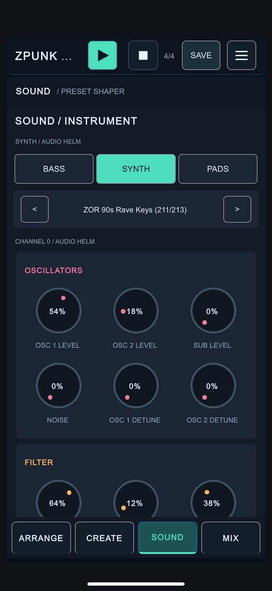

Some of the most driving techno basslines are also the simplest. They barely move melodically, yet the combination of a repetitive rhythm, hard-edged sound and a steady kick makes the whole track feel as if it is pushing forward.
You don’t need a complicated chord progression to get there. Start with the timing. Build one bar that has momentum, make the sound respond to the rhythm, and let small changes do the work. Here’s one approach you can try in ZPUNK or any piano-roll sequencer.
Set the pulse before writing a melody
Start with a straight four-on-the-floor kick and a tempo that gives the groove enough urgency. Somewhere around 128–136 BPM is a useful starting range, but there is no single correct tempo. What matters is the way the bass feels against the drum.
Pick a root note in a minor key. For the example below, we’ll use F minor. Begin on F and resist adding a scale run. The bassline should be able to hold attention before it starts moving up and down the keyboard.
Build a one-bar engine with 16th notes
Divide a bar into sixteen equal steps. Place short bass notes on the subdivisions between the quarter-note kicks. That gives the bass a rapid, almost mechanical motion while the kick keeps the pulse anchored.
Try this original one-bar pattern. The bass repeatedly hits F, then touches G♭ just before the bar turns over. Those small movements create tension without turning the pattern into a melody.
One bar in 4/4. Read from left to right; each column is a sixteenth note. This is an original illustration, not a transcription of an existing track.
Keep the notes short enough to retrigger cleanly. You can tighten the note lengths further if the low end feels crowded, or add back a little sustain if the groove is too thin. Listen rather than assuming every note must occupy its entire sixteenth-note slot.
Make the kick and bass support each other
Driving doesn’t have to mean that the kick and bass compete for the same space. In the pattern above, the quarter-note kick hits are left clear of bass note attacks. That’s a useful starting point, not a rule: if you prefer notes on every sixteenth, you can make the kick and bass coexist by shortening the bass notes and balancing their levels.
Check the groove at a low listening volume. If the bass seems to swallow the kick, adjust its note length, envelope or level before reaching for more effects. A tight relationship between the two sounds creates more force than simply making both louder.
Use one tension note rather than a busy melody
One unexpected pitch can change the feeling of an otherwise repetitive bassline. In F minor, G♭ is a semitone above the root. Used briefly as an approach note, it gives the next F an uneasy pull.
Try replacing only the fifteenth step, as in the example. Then try removing it. Compare how much the groove changes. You can also experiment with an occasional octave jump or a small descending movement at the end of every fourth bar, but keep the core pattern recognizable.
Shape a bass sound that bites
A driving pattern needs a sound that makes each repeated note clear. Start with a bass preset that has a firm attack and enough midrange presence to be heard on smaller speakers. A short amplitude envelope keeps the notes distinct, while the filter controls how much grit and brightness comes through.
Work on the sound with the kick playing. On its own, a thick bass patch might seem impressive; in a loop, its longer tail may smear the rhythm. Try a tighter envelope first, adjust the filter and resonance to bring out character, and keep an eye on the combined low end.

Let the repetition build the pressure
A strong one-bar techno pattern is allowed to repeat. That repetition is what makes it hypnotic. Instead of changing the bass every bar, leave it steady while hats, percussion, filters or the arrangement shift around it.
When you do introduce a variation, make it count: change the final note of every fourth bar, remove a few sixteenths before a transition, or make a subtle filter change. The listener should still recognize the same pulse when the full groove returns.
Build it in ZPUNK
In ZPUNK, choose the BASS track and create a clip in the piano roll. Set up a one-bar pattern, use the note-length controls for short gates and place the repeating notes on sixteenth-note divisions. Adjust velocity if you want a few accents to push through without changing the pitches.
Open the SOUND page to choose and shape a bass preset, then switch to ARRANGE when the pattern is working. Duplicate or extend the clip to hear how the repetition behaves over longer sections. Build around it with a solid kick, hats and a few sparse elements rather than filling every available track.
The point is to sketch an idea that already has an identity. You can develop it on your phone, export it and keep working elsewhere if you want—but the groove should work on its own first.

Build the bassline in your pocket.
ZPUNK combines a BASS piano roll, drums, instrument controls and arrangement in a portrait-first groovebox. Put together a one-bar idea, loop it and see where it goes.
Final thoughts
A driving techno bassline is less about how many notes you can fit into a bar and more about how those notes lock into a groove. A repeated root, a deliberate 16th-note rhythm, a controlled envelope and one or two moments of tension can be enough to make a pattern feel relentless.
Start small. Get the relationship between the kick and bass right. Then keep what works and let the repetition do its job.
← Back to the blog